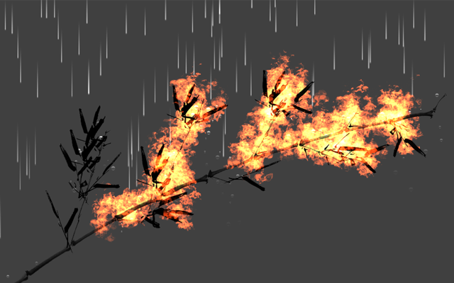

UT CS honors students complete a thesis as part of their undergraduate career. My thesis, Physically Based Modeling of Interactive Plants, was done under professors Donald Fussell and (second reader) Calvin Lin. The goal was to produce a fully interactive simulation of a soft-body tree or plant which appeared realistic in its animation (the time domain), as opposed to looking convincing in a screenshot.
In retrospect, as a research work I spent too little time examining prior work and too much time hand-rolling my own physics. The results were not quantitatively measured, although everyone at the defense agreed that the animation was convincing. Despite these flaws, this thesis was selected for the department's runner-up best-undergraduate-thesis-award of 2012.
Find it here in this page of reports, or locally: [ ].
[ , Windows 32-bit ]

Comes with defense presentation slides (made with deck.js).
As a proof of concept, this was later extended by Katheryn Shi onto iOS with Core Motion support, producing an app featuring a plant that wiggled in response to shaking of the device.